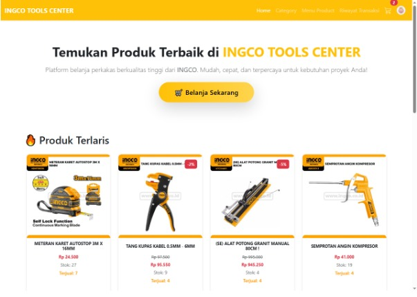
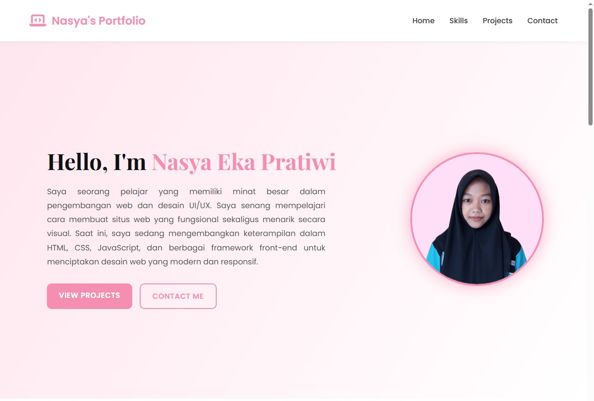

Proyek Pribadi (Laravel)
Website untuk Ingco Tools Center dengan fitur katalog produk, login pengguna, serta dashboard admin, yang dibangun menggunakan Laravel.
View Project
Proyek Pribadi
Website portofolio pribadi yang modern dan responsif, dibangun menggunakan HTML, CSS, dan JavaScript, untuk menampilkan keterampilan, proyek-proyek, serta informasi kontak.
View Project